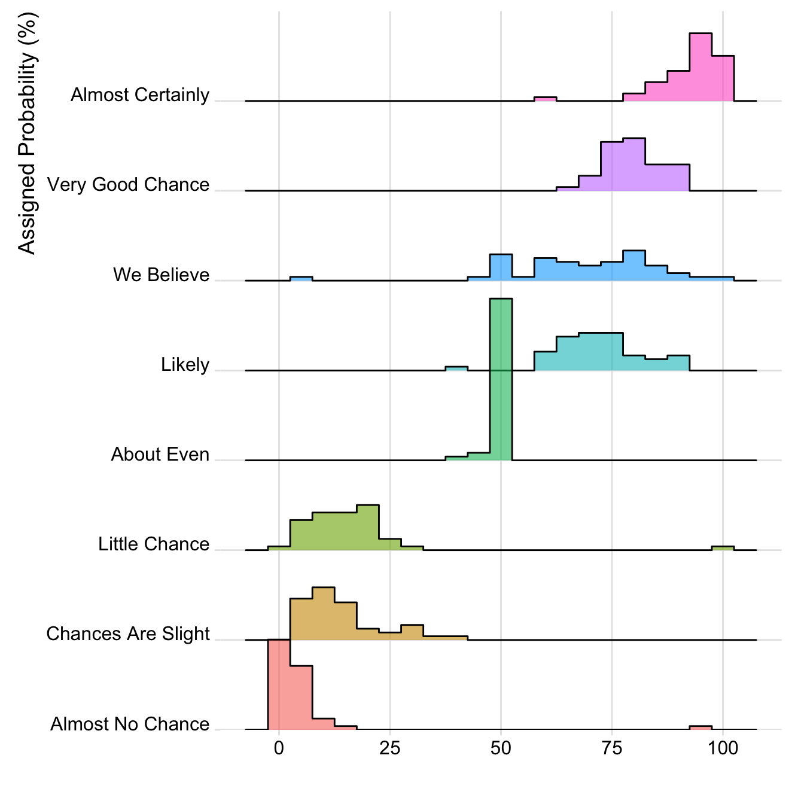

Related chart types

Violin

Density

Histogram

Boxplot

Ridgeline
The ridgeline plot allows to study the distribution of a numeric variable for several groups. This document explains how to build it with R and the ggridges library.
A Ridgelineplot (formerly called Joyplot) allows to study the distribution of a numeric variable for several groups. In this example, we check the distribution of diamond prices according to their quality.
This graph is made using the ggridges library, which is a ggplot2 extension and thus respect the syntax of the grammar of graphic. We specify the price column for the X axis and the cut column for the Y axis. Adding fill=cut allows to use one colour per category and display them as separate groups.
# library
library(ggridges)
library(ggplot2)
# Diamonds dataset is provided by R natively
#head(diamonds)
# basic example
ggplot(diamonds, aes(x = price, y = cut, fill = cut)) +
geom_density_ridges() +
theme_ridges() +
theme(legend.position = "none")It is possible to represent the density with different aspects. For instance, using stat="binline" makes a histogram like shape to represent each distribution.

# library
library(ggridges)
library(ggplot2)
library(dplyr)
library(tidyr)
library(forcats)
# Load dataset from github
data <- read.table("https://raw.githubusercontent.com/zonination/perceptions/master/probly.csv", header=TRUE, sep=",")
data <- data %>%
gather(key="text", value="value") %>%
mutate(text = gsub("\\.", " ",text)) %>%
mutate(value = round(as.numeric(value),0)) %>%
filter(text %in% c("Almost Certainly","Very Good Chance","We Believe","Likely","About Even", "Little Chance", "Chances Are Slight", "Almost No Chance"))
# Plot
data %>%
mutate(text = fct_reorder(text, value)) %>%
ggplot( aes(y=text, x=value, fill=text)) +
geom_density_ridges(alpha=0.6, stat="binline", bins=20) +
theme_ridges() +
theme(
legend.position="none",
panel.spacing = unit(0.1, "lines"),
strip.text.x = element_text(size = 8)
) +
xlab("") +
ylab("Assigned Probability (%)")It is possible to set color depending on the numeric variable instead of the categoric one. (code from the ridgeline R package by Claus O. Wilke )
# library
library(ggridges)
library(ggplot2)
library(viridis)
library(hrbrthemes)
# Plot
ggplot(lincoln_weather, aes(x = `Mean Temperature [F]`, y = `Month`, fill = ..x..)) +
geom_density_ridges_gradient(scale = 3, rel_min_height = 0.01) +
scale_fill_viridis(name = "Temp. [F]", option = "C") +
labs(title = 'Temperatures in Lincoln NE in 2016') +
theme_ipsum() +
theme(
legend.position="none",
panel.spacing = unit(0.1, "lines"),
strip.text.x = element_text(size = 8)
)Related chart types